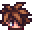
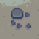
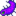

Zencefil Adası
| Zencefil Adası | |
 | |
 | |
| Oturanlar: |  Leo |
Zencefil Adası, Eğrelti Otu Adaları ada denizinde bir adadır ve oyuncunun bu ada denizinde ziyaret edebileceği tek adadır. Balıkçı'nın arka odasındaki tekne onarılınca ada erişilebilir hâle gelir. Tekne sürüşü için bir bilet  1.000g fiyatındadır, geri dönüş bedavadır ve adaya erişmenin ana yolu budur.
1.000g fiyatındadır, geri dönüş bedavadır ve adaya erişmenin ana yolu budur.
Oyuncu ilk defa tekneyi kullandığında, bölgedeki diğer adaları da gösteren bir ara sahne oynatılır. Bundan sonraki tekne kullanımlarında bu animasyon atlanılabilir hâle gelir. Tekne, adadaki bir iskelede durur, başlangıçta da adada sadece bir yol açıktır ve diğerleri kapalıdır. Ada tamamen papağanlara bir evdir, aynı zamanda adadaki çeşitli şeyler için papağanlarla Altın Ceviz takası yapılabilir. Zencefil Adası, oyuncunun Stardew Valley'de ziyaret edebileceği yerler arasından tamamen farklı bir yerdir, çünkü Sera'ya benzer olarak, sezon farketmeksizin adada herhangi bir ekin ekilebilir ve balık tutulabilir.
Oyuncu istediği zaman güneydeki kumsaldan tekneye birerek ücretsiz olarak Yıldızçiyi Vadisi'ne geri dönebilir. Genelde geri dönüldüğünde Balıkçı'nın içinde olunulur, festivaller hariçtir; Çiftlik'e geri dönen yol engellendiği için, oyuncu bazen Otobüs Durağı'na bırakılabilir. Eğer festival Kumsal'da oluyorsa oyuncu Pelikan Kasabası'nın içinde olan, kasabayı kumsal ile bağlayan köprünün orada bırakılabilir.
Adanın Güneyi
Burası oyuncunun ilk vardığı yerdir. Barındırdığı şeyler bir iskele, yıkık bir binanın parçalarının olduğu küçük bir kumsal ve adadaki diğer belirli noktalara açılan yollar. Ayrıca, Işınlanma Totemi: Ada veya Ada Dikilitaşı kullanıldığında ışınlanılacak yer de adanın bu bölgesindedir. Bu ışınlanma methodu sayesinde Willy'nin dükkanı kapalı olsa da adaya gelinebilir.
Başlangıçta, sadece Adanın Doğu kısmı erişilebilirdir, diğer Adanın Kuzeyi ve Adanın Batısı kısımlarını iki devasa kaplumbağa kapatmış hâlde duruyor. Oyuncu, ilk önce görülen ve daha sonradan Adanın Doğusundaki ormana kaçan Leo'yu takip etmelidir. Leo'nun kulübesinde onunla iletişime geçmek, kuzeydeki girişi açacaktır, aynı zamanda güneydeki kumsala geri dönüldüğünde bir Magma Tayfı belirir ve bu da oyuncuyu Yanardağ'a götürür. Batıdaki yolu engelleyen kaplumbağa da yanındaki papağana 10 |altın ceviz verilerek kaldırılabilir.
Plaj Tatil Yeri
Adanın batısındaki ada çiftlik evi tamir edildikten sonra, yıkık binanın parçaları da 20 Altın Ceviz karşılığında bir plaj tatil yerine çevrilebilir. Bundan sonra da arada sırada Pelikan Kasabası'ndan kasabalılar burası ziyaret edebilir; festival günü veya yağmurlu bir gün olmadıkça; saat 11:00'da gelir ve 18:00'da giderler. Oyuncu, kıyafet değiştirme odalarının kapılarının arasındaki tabeladan tatil yerini kapayabilir ve açabilir.
Plaj tatil yeri açıldıktan sonra, Gus burayı ziyaret ettikçe bir bar yönetir.
| Görsel | İsim | Açıklama | Fiyat |
|---|---|---|---|
| Piña Colada | İçerken aşırıya kaçmamalı. | ||
| Bira | Kararında içilmeli. | ||
| Soluk Bira | İçerken aşırıya kaçmamalı. | ||
| Likör | Baldan yapılan mayalanmış bir içecek. İçerken aşırıya kaçmamalı. | ||
| Kızılcık Şekeri | Acı meyveyi unutturacak kadar tatlı. | ||
| Mango Şarabı | Kararında içilmeli. | ||
| Tropik Köri Tarifi | Tropik Köri yapma tarifi. |
Adanın Güneydoğusu
Bu bölge, Plaj Tatil Yeri, iskelenin doğusundaki enkazı temizleyerek açıldıktan sonra açılır. Yıldız şekilli bir su birikintisi, denizin içinde büyük bir kaya ve gizli bir korsan mağarası içerir.
Korsan Mağarası

Korsan Mağarası'na Adanın Güneydoğu bölgesindeki yıldız şekilli su birikintisinin doğusundaki gizli bir geçitten erişilebilir. Oyuncu mağaraya istediği zaman girebilir; güneydoğusundaki gölde veya girişindeki küçük su parçalarında balık tutabilir. Bu su parçaları, oyunda iğnelivatoz elde etmenin tek yoludur. Ayrıca resimdeki suda balık tutulursa oyuncu  Gurme Heykelciği elde edecektir, ki yakalandığında ilk başta bir hediye kutusunun içinde gözükür.
Gurme Heykelciği elde edecektir, ki yakalandığında ilk başta bir hediye kutusunun içinde gözükür.
Birtakım korsan, herhangi bir sezonun çift sayılı numaralı, yağmursuz bir günde 20:00'dan sonra ziyaret eder. Eğer oyuncu korsanların geldiği bir günde 20:00'dan önce mağaranın içinde bulunuyorsa saati geldiğinde oyuncu otomatik olarak mağaranın girişinin dışına ışınlandırılır. Yine de daha sonradan oyuncu, mağaraya tekrar girebilir. Korsanlar ziyaretteyken, oyuncu Dart oynayarak Altın Ceviz kazanabilir (bu oyunu 3 kere kazandıktan sonra başka ödül vermez). Ayrıca bir bar vardır, eğer oyuncu Korsan Şapkası, Göz Bandı veya Büyük Korsan Şapkası şapkalarından birini takıyorsa bardaki adam ona bedava Likör verir.
Kışta, Ayışığı Denizanalarının Dansı festivalinde beliren denizanaları gibi birtakım denizanası da kuzeydoğudaki gölde görülebilir, tabii yakalanamazlar.
Denizkızı

Yağmurlu günlerde denizdeki büyük kayanın üstünde bir Denizkızı belirir. Eğer oyuncu kaval düğmeleri yerleştirir ve onları Akşam Pazarı'ndaki denizkızı şarkısındaki gibi çalarsa bu denizkızı da oyuncuyu 5 Altın Ceviz ile ödüllendirir.
Denizkızı şarkısını çalmak için, beliren taşların altına veya üstüne kaval düğmeleri yerleştirilmeli ve ardından taşların sayısı kadar üzerlerine tıklayarak tonları değiştirilmelidir. Bir büyük taş 5 ve 1 küçük taş da 1 tıklamaya tekabüldür. Bütün 5 düğmeyi de ayarladıktan sonra, soldan-sağa doğru üzerlerinden geçin.
| Taş-Düğme Tonu Ayarlama | ||||
|---|---|---|---|---|
| Blok 1 | Blok 2 | Blok 3 | Blok 4 | Blok 5 |
 |
 |
 |
 |
 |
| 1 tıklama | 10 tıklama | 8 tıklama | 4 tıklama | 6 tıklama |
| veya | ||||
| 2 tıklama | 11 tıklama | 9 tıklama | 5 tıklama | 7 tıklama |
Adanın Doğusu
Bu bölgeye Adanın Güneyinde, doğuya doğru ilerleyerek erişilebilir. İçinde bir ormanı ve konuşan bir papağanı olan Leo'nun kulübesini barındırır. Bu papağan oyuncuya her bölgede kaç Altın Ceviz kaldığı ile ilgili ipuçları verecektir. Kulübenin dışında da Muz Adağı bulunur.
- Bu bölgede Eğrelti Otu toplanılabilir.
Mücevher Kuşları

Ormanın doğusunda gizli bir bölge vardır ve bu bölgede bir sunak ile birkaç sütun bulunur. Girişi papağan ekspresi aracının bir kare altındadır. Her sütunun üzerinde küçük resimler bulunur ve bu resimler adanın bölgelerini temsil eder. Sunak ile etkileşime geçmek şu mesajı verir:
- "Görev başladığı an kara bulutlar döker
- Dört günde, efsanedir mücevher kuşları
- Kuzeye, güneye, doğuya ve batıya birer birer
- Döner ve bırakır önüne armağanları"
Adada geçen her yağmurlu bir günde, bir mücevher kuşu adanın bir bölgesinde ortaya çıkacaktır:
- Güneyde: İskelenin hemen kuzeybatısında
- Doğuda: Bölgenin tam ortasında
- Kuzeyde: Ada Taciri'nin kuzeydoğusunda
- Batıda: Gölün hemen batısında
Kuşa yaklaşmak, onun uçmasına ve arkasında rengine bağlı olarak bir mücevher bırakmasına sebep olacaktır: Gök Zümrütü, Topaz, Ametist, Zümrüt veya Yakut. Bu mücevher, bulunduğu ada bölgesine bağlı olarak o adanın bölgesini temsil eden sütunun üzerine koyulmalıdır. 4 sütun da doldurulduğunda; sunak, oyuncuya 5 Altın Ceviz verecektir.
Notlar:
- Adadaki hava ile Yıldızçiyi Vadisi'ndeki hava bağlantılı değildir. Televizyonda hava durumu kanalı; oyuncu, Zencefil Adası'nı ilk ziyaret ettiğinde, Zencefil Adası'nın da günlük hava durumunu vermeye başlar.
- Eğer kuşların hızlı belirmesini istiyorsanız adadayken Yağmur Totemi kullanabilirsiniz.
- Mücevher bulmacası çözülse de mücevher kuşları ortaya çıkmaya devam edebilir. Yine de bulmacayı tekrarlamak size daha fazla ödül vermeyecektir.
- Beş tür mücevher kuşu bulunuyor, hepsi kendi mücevherini bırakır. Bu beşinden, bulmaca için dört tanesi seçilir.
- Değerli taşların kuşlar tarafından düşürülen taşlar olmasına gereok yoktur. Başka yolla elde edilmiş aynı tür bir değerli taş da kabul edilir. Üstelik hiçbir kuşa yaklaşmadan da bulmaca çözülebilir. Değerli taşların yeri tahmin edilebilir.
Adanın Kuzeyi
Bu alan, Güney Adasındaki rıhtımdan kuzeye doğru yürünerek ulaşılan yerleri içermektedir. Bir altın Joja papağanı bu bölgenin kuzeyinde, Yanardağ Zindanı girişinin kuzeybatısında bulunabilir.
Ada Taciri
- Ana makale: [[Ada Taciri]]
Ada Taciri, Adanın Kuzeyinde iş yeri yöneten mavi bir ticaretçi kuştur. Ada Taciri'nin yerini inşa ettirmeye yarayan papağan, Ada Çiftlik Evi onarıldıktan sonra belirir. Papağana 10 Altın Ceviz vermek, bu tacirin yerini açacaktır.
Tacir sürekli ada-temalı ögeler satar, herhangi bir para birimi ile satın alınamazlar ve sadece takas kabul eder. Takasta istenilen ögeler toplayıcılık yaparak bulunulabilir, çoğu da zaten Zencefil Adası'nda ortaya çıkar. Özel takas ögelerinin çoğu adanın temasıyla uygun olan mobilyalar satar. Galaksi Ruhu da tacirin ürünlerinin arasında elde edilmesi en zor ögedir (çıktığı zamanlar gerekçesiyle).
Kazı Alanı
Araştırma Çadırının batısında başlangıçta kırık olan ama sonradan bir papağana 10 Altın Ceviz karşılığında onarılabilen bir köprü vardır. Onarıldığında Kazı Alanına erişilebilir, Taş Ocağına benzer bir bölgedir. Kayalar, fosil taşları, kil yumruları ve maun ağaçları bulunabilir.
Kazı alanının kuzeyindeki merdivenlerin hemen doğusunda da Zencefil Adası Mantar Mağarası vardır. Başlangıçta, girişini engelleyen bir kaya bulunur ve arkasında da yardım isteyen biri bulunur. Kayanın kaldırılması için herhangi bir bomba yerleştirilmelidir, kaldırıldığında da Salyangoz Hoca dışarı çıkar ve Araştırma Çadırı'nı çalıştırmaya başlar. Mağarada her gün yeni mantarlar ortaya çıkar. Çiftlikteki mağaranın aksine, mantarlar direkt olarak yerde ortaya çıkar, yani Toplayıcı veya Bitkibilimci uzmanlık alanları da oyuncu bu mantarları toplarken yardım ederler. Bu mağarada Fizz'den mükemmellik feragatnameleri satın alabilirsiniz.

Araştırma Çadırı
- Ana makale: [[Araştırma Çadırı]]
Araştırma Çadırı, Adanın Kuzeyinin neredeyse merkezinde bulunan bir ofistir. Salyangoz Hoca, kazı alanındaki mantar mağarasından kurtarılana dek ofis çalışmaz. Ondan sonrasında oyuncu, fosil bağışlayabilir ve Ada Gözlem anketlerini cevaplayabilir, karşılığında da çeşitli ödüller alabilir.
Yanardağ Zindanı
- Ana makale: [[Yanardağ Zindanı]]
Bölgenin en kuzey noktasında 10 seviyesi olan bir yanardağ zindanı bulunur, 10 seviyesinden 8 seviyesi rastgele üretilir, Kafatası Mağarası'na benzer olarak. 5. seviyede bir dükkan ve 10. yani son seviyede de Demir Ocağı bulunur, bu ocakta Köz Parçacığı kullanılarak aletler ve silahlar geliştirilebilir.
Zindanda ilerlemek için, lavda yol oluşturmak için bir sulama kabı gereklidir. Sulama kabı ile oluşturulan yol, her gün kaldırılır, yani her gidildiğinde tekrar sulama kabı ile yeni bir yol yapılmalıdır. Oyuncu, Demir Ocağı'na eriştikten ve bölgenin güneybatısındaki çıkış kapısından çıktıktan sonra, zindanın girişinde bir papağan ortaya çıkacak ve lavın üzerinde kalıcı bir köprü oluşturulması için 5 Altın Ceviz takaslamak isteyecektir.
Başlangıçtaki lav nehrinin soluna doğru bir yol çekilirse gizli bir çıkış bulunabilir. Bu gizli çıkış, kazı alanı bölgesindeki derenin kuzeyindeki küçük bir yere açılır, bu yerde de 2 Altın Ceviz bulunabilir.
Adanın Batısı
Bu bölgeye Adanın Güneyindeki girişten erişilebilir. Başlangıçta giriş, uyuyan bir kaplumbağa tarafından engellenmiştir, ancak yanındaki papağana 10 Altın Ceviz verilerek bu kaplumbağa uyandırılabilir. Bu papağan, Leo'nun kulübesindeki papağan bir Altın Ceviz yedikten sonra ortaya çıkacaktır.
Bu bölgenin tamamı yarısından bir dere ile ikiye ayrılmıştır ve bir bölgeden diğerine derenin üzerinde bulunan üç tahta köprüden biri kullanılarak geçilebilir. Doğusunda Çiftlik, Gurme Kurbağa ve Gemi Enkazı; batısında da su birikintileri, Birdie'nin Kulübesi, Yeşil Köstebeği Vurmaca, Bay Qi'nin Ceviz Odası, Çizgili Balçıkça Bahçesi ve Renkli Kristal Bulmacası bulunur.
Adanın Batısı 879 ekilebilir kareye sahiptir, bunlar şunlardır:
- 775 tanesi ana bölgede
- 55 tanesi derenin batı kıyısındaki topraklar
- 42 tanesi gölün etrafındaki topraklar
- 1 tanesi çizgili balçıkça bahçesinde gizlenmiş bir toprak
- 5 tanesi çiftliğin kuzeyindeki Papağan Ekspresi'nin önündeki küçük toprak parçası
- 1 tanesi Papağan Ekspresi'nin yakınında gizlenmiş bir toprak
Ayrıca Bay Qi'nin Ceviz Odası'nın üzerindeki alanda da 33 kare vardır ancak sandalye hatası kullanılarak haritanın dışına çıkılmadığı sürece buraya erişelemez.
Çiftlik
Ekinlerin ekilebileceği büyük bir bölge bulunur. Başlangıçta bu bölge kütükler, taşlar ve yabani otlar ile kaplıdır, aynı Yıldızçiyi Vadisi'ndeki çiftliğin ilk hâli gibi. Burada fıskiye yerleştirilebilir ve meyve ağaçları ekilebilir. Kargalar bu çiftlikte beliremez, yani korkuluk yerleştirmeye gerek yoktur. Aynı Sera'nın işlevi gibi, Zencefil Adası'ndaki bu çiftlikte mevsim farketmeksizin herhangi bir ekin büyütülebilir.
Başlangıçta yıkık hâlinde bulunan bir çiftlik evi vardır, bu çiftlik evi, papağanlara 20 Altın Ceviz verilerek tamir edilebilir. Evde bir mutfakla beraber 4 oda ve oyuncu başına bir Tropik Yatak bulunur. Ayrıca bir gönderme kutusuyla beraber gelir. Ev onarıldıktan sonra, ardından ekstra 5 Altın Ceviz ile bir posta kutusu ve 20 Altın Ceviz ile de bir Çiftlik Dikilitaşı inşa edilebilir.
Gurme Kurbağa
Papağanlar Ada Çiftlik Evi'ni onardıktan sonra, ada çiftliğinin kuzeydoğusunda bir mağara açılır. İçinde de eskiden çiftliğinde büyüttüğü ekinleri ve eski anılarını anlatan Gurme Kurbağa vardır; aynı zamanda oyuncudan da bu belirli ekinleri büyütmesini ister. Büyütüldüklerinde de onunla iletişime geçilip Altın Cevizler kazanılabilir.
| Çözümü |
|---|
| Bu bir çiftçilik görevidir. Gurme Kurbağa oyuncudan üç ekin büyütmesini ister, tek seferde tek ekin: ilk Kavun, ardından Buğday ve ardından Sarımsak. Her ekinden en az bir tane Ada Çiftliği'nde ekilmesi gerekir, ama tamamen olgunlaştıklarında da alınmamaları gerekir. Olgunlaştıklarında kurbağa ile iletişime geçip ekinin hazır olduğu söylenmelidir. Bu da kurbağanın ekini kontrol ettikten sonra oyuncuya 5 Altın Ceviz verdiği bir ara sahneyi oynatır. Ekinler herhangi bir zamanda ekilebilir, hepsi aynı anda da büyütülebilir, ancak kurbağanın isteği gereği hepsi çiftlikte bulunmalıdır. |
Birdie'nin Kulübesi
Bölgenin batısında Birdie'nin yaşadığı bir kulübe bulunur. İlk tanışmada direkt olarak oyuncuya "Korsanın Karısı" görevini verecektir. Görev tamamlandıktan sonra, başka görev vermez ama oyuncuyla konuşabilir.
Yeşil Köstebeği Vurmaca
Delikten deliğe hareket eden yeşil bir kazılca vardır, sulama kabı kullanılarak veya üç delik, yere yerleştirilebilen herhangi bir obje ile kapatılarak ve ardından kazılcaya balta veya kazma ile "vurulabilir".
Gemi Enkazı
Bölgenin kuzeydoğusunda, çiftliğin alt kısmında, bir gemi enkazı bulunur ve içinde bir Altın Ceviz bulunulabilir. Birdie ile ilk tanışmada Birdie, kocasının bu geminin kaptanı olduğunu söyler.
Çizgili Balçıkça Bahçesi
Gölün kuzeyine bir açıklık bulunur. Burada maun ağaçları ve Çizgili Balçıkçalar ortaya çıkabilir.

Renkli Kristal Bulmacası
Bu bulmaca Çizgili Balçıkça Bahçesi'nin kuzeydoğusundaki bir mağaranın içinde bulunur.
Mağaraya girdikten sonra "Simon Der Ki" oyununu başlatmak için aslan heykeli ile etkileşime geçilmelidir. Oyun her tur da daha da hızlanır, toplam da 5 tur vardır. Oyunu kazanınca üç Altın Ceviz kazanılır. Eğer herhangi bir tur kaybedilirse 1. turdan başlayacaktır. Her kaybedilen turdan sonra, oyun yavaşlamaya başlayacaktır.
Bay Qi'nin Ceviz Odası
- Ana makale: [[Bay Qi'nin Ceviz Odası]]
100 Altın Ceviz toplanılarak girilebilen bir oda. İçinde Mükemmellik takipçisi, bir Özel İstekler Panosu (Pelikan Kasabası'ndakine benzer) ve Qi Taşı karşılığında eşya satın alınılabilen bir makine bulunur.
Kumsal
Bölgenin güneybatısında denizkestanelerinin ve mercanların ortaya çıkabileceği gelgit havuzları bulunur. Bölgenin güneydoğusunda da midye taşları bulunur, bu taşların içlerinden midye düşer (ve 5 gizli Altın Ceviz de bulunulabilir).
Ulaşım
Papağan Ekspresi
Papağan Ekspresi, oyuncuyu bir köşeden diğerine götürebilecek bir ulaşım sistemidir, şu beş yere hızlıca uçurabilir: Yanardağ, Çiftlik, Olak, Orman ve İskele. Olağa erişim sağlayan köprü tamir edilmediği sürece ekspress ile olağa uçulamaz.
Ekspresi açabilmek için; oyuncu, çiftliğin olduğu bölgenin merdivenle erişebildiği üst kısmındaki bir papağana 10 Altın Ceviz verilmelidir. Bu esspresin satın alınılabilir olması için adanın dört yönü de daha önce ziyaret edilmiş olması gerekir.
Oyuncu, ekspreste bir istasyon seçtikten sonra, bir animasyon oynatılır; oyuncu araca biner ve papağanlar, bu aracın yapraklarından tutarak aracı uçurmaya başlar. Sahneden sonra da oyuncu, seçtiği bölgede belirir.
Balıkçılık
Adanın Kuzeyi
| Saat | |||||||||||||||||||||
|---|---|---|---|---|---|---|---|---|---|---|---|---|---|---|---|---|---|---|---|---|---|
| 06 | 07 | 08 | 09 | 10 | 11 | 12 | 13 | 14 | 15 | 16 | 17 | 18 | 19 | 20 | 21 | 22 | 23 | 00 | 01 | ||
Adanın Güneyi ve Güneydoğusu
| Saat | |||||||||||||||||||||
|---|---|---|---|---|---|---|---|---|---|---|---|---|---|---|---|---|---|---|---|---|---|
| 06 | 07 | 08 | 09 | 10 | 11 | 12 | 13 | 14 | 15 | 16 | 17 | 18 | 19 | 20 | 21 | 22 | 23 | 00 | 01 | ||
| Sadece güneşli gün | |||||||||||||||||||||
|  Büyük Denizhıyarı | |||||||||||||||||||||
Korsan Mağarası
| Saat | |||||||||||||||||||||
|---|---|---|---|---|---|---|---|---|---|---|---|---|---|---|---|---|---|---|---|---|---|
| 06 | 07 | 08 | 09 | 10 | 11 | 12 | 13 | 14 | 15 | 16 | 17 | 18 | 19 | 20 | 21 | 22 | 23 | 00 | 01 | ||
| Sadece güneşli gün | |||||||||||||||||||||
| Büyük Denizhıyarı | |||||||||||||||||||||
Adanın Batısı
Zencefil Adası'nın batısında iki tür su olduğunu unutmayın: tatlı su ve okyanus. Nehrin en güneyindeki ahşap köprü, ikisi arasındaki bölücüdür. Okyanus batıda ve güneydedir; En güneydeki ahşap köprünün kuzeyindeki gölet ve nehir tatlı sudur.
| Saat | |||||||||||||||||||||
|---|---|---|---|---|---|---|---|---|---|---|---|---|---|---|---|---|---|---|---|---|---|
| 06 | 07 | 08 | 09 | 10 | 11 | 12 | 13 | 14 | 15 | 16 | 17 | 18 | 19 | 20 | 21 | 22 | 23 | 00 | 01 | ||
| Okyanus | |||||||||||||||||||||
| Okyanus | |||||||||||||||||||||
| Okyanus | Sadece güneşli gün | ||||||||||||||||||||
| Büyük Denizhıyarı | Okyanus | ||||||||||||||||||||
| Okyanus | |||||||||||||||||||||
| Okyanus | |||||||||||||||||||||
| Tatlı su | |||||||||||||||||||||
| Tatlı su | |||||||||||||||||||||
| Tatlı su | |||||||||||||||||||||
Demir Ocağı
- Ana makale: [[Demir Ocağı]]
Günün herhangi bir zamanında lav yılanbalığı ve çöp yakalanılabilir. Ayrıca bir adet 'Fizik 101' tablosu da bulunulabilir.
Galeri
Adanın Kuzeyi

Adanın Doğusu

Adanın Güneyi
Adanın Batısı

Adanın Batısı, sulanmış kareler (pirinç filizi ve gölevez için)

Adanın Güneydoğusu

Adanın Güneydoğusundaki Mağara

Adanın Güneydoğusundaki Mağara, Korsanlar Ziyaret Ederken

Ada Yanardağındaki Demir Ocağı
Ek Bilgiler
- Renkli Kristal Bulmacası'ndaki renkli kristaller, Müze'ye 21 mineral bağışlandırıldığında verilen bir dekorasyon olan Şarkıcı Taşı andırır.
- Korsan Mağarası'nda kavga eden iki korsan, Mario Bros oyununa bir referanstır.
- Kışta yağmursuz günlerde yalnızca 18:00'dan sonra Ayışığı Denizanalarının Dansı festivalinde görülebilen denizanaları, adanın sularında belirebilir.
Geçmiş
- 1.5: Eklendi.
- 1.6: Adayı seyahat ederken görülebilen bir harita eklendi. Küçük Müzik Kutusu artık Zencefil Adası Çiftliğinde oynanabilir. Korsan Mağarasındaki barmen artık Papağan Yumurtası aksesuarını bir korsan kıyafeti olarak görür. Oyuncu artık Çiftlik Dikilitaşı inşa ettiğinde bir Işınlanma Totemi: Ada da elde eder. Adanın doğu bölgesine 3 Çadır Aparatı eklendi. Altın Joja Papağanı ve Mükemmellik Feragatnameleri eklendi.
| Mekanlar | |
|---|---|
| Mekanlar | Cadı'nın Bataklığı • Çiftlik Göleti • Çiftlik • Çöl • Dağ • Demiryolu • Gizli Koru • Kafatası Mağarası • Kömürözü Ormanı • Kumsal • Lağım • Madenler • Mağara • Maden Arabası • Mezarlık • Zencefil Adası • Ustalık Mağarası • Mutant Böcek Yuvası • Ormanönü • Otobüs Durağı • Pelikan Kasabası • Taş Ocağı • Taş Ocağı Madeni • Tünel |